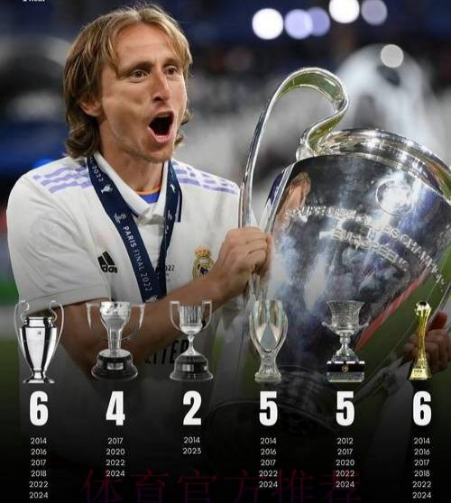

Honours
Modrić is one of the most decorated football player with 34 major trophies.
Club
Dinamo Zagreb
Prva HNL: 2005–06, 2006–07, 2007–08
Croatian Cup: 2006–07, 2007–08
Croatian Super Cup: 2006
Tottenham Hotspur
Football League Cup runner-up: 2008–09
Real Madrid
La Liga: 2016–17, 2019–20, 2021–22, 2023–24
Copa del Rey: 2013–14, 2022–23
Supercopa de España: 2012, 2017, 2020, 2022, 2024
Modrić is the player who has won the most Champions League trophies. He has 6 UEFA Champions League: 2013–14, 2015–16, 2016–17, 2017–18, 2021–22, 2023–24
UEFA Super Cup: 2014, 2016, 2017, 2022, 2024
FIFA Club World Cup: 2014, 2016, 2017, 2018, 2022
FIFA Intercontinental Cup: 2024